▲ 붉은 단풍이 드리운 청남대 경내 산책도로. 청남대관리사업소 포토갤러리에 게시된 가을 사진이다 ⓒ 청남대관리사업소(충청북도)
대통령이 쓰던 별장에 들어가는데 예약이 필요할까, 입장료는 얼마일까. 충북 청주시 상당구 문의면 대청호반에 자리한 청남대는 1983년부터 대통령 공식 별장으로 쓰이다 2003년 4월 일반에 공개된 곳으로, 가을이면 대청호와 단풍을 보러 오는 드라이브 방문객이 늘어난다.
이 글은 2026년 9월 29일 기준 청남대 공식 홈페이지의 관람안내·요금·모노레일 시간표·오시는 길·공지를 직접 확인해 정리했다. 공식 페이지끼리 표기가 엇갈리거나 아직 공개되지 않은 항목(가을축제 세부 프로그램, 순환버스 시간표 등)은 '확인 필요'로 구분했다.
1. "예약 안 하면 못 들어가나?" — 공식 안내로 확인한 매표 방식
결론부터 말하면 공식 안내에 사전 예약 의무는 없다. 청남대 공식 관람안내는 입장 방법을 '청남대 진입 → 주차 → 청남대 매표소에서 입장권 구입 → 관람' 순서로 적고 있다. 즉 자가용 방문자는 현장에 주차한 뒤 매표소에서 표를 사면 된다.
혼란은 '온라인 매표' 때문에 생긴다. 공식 사이트에는 아직 '청남대 온라인 매표' 안내 페이지가 남아 있는데, 여기에는 "청남대 온라인 매표는 입장 및 주차 예약이 아닙니다", '승용차 입장자만 결제', '미결제 차량은 문의매표소에서 매표 후 시내버스로 입장' 같은 과거 방식의 문구가 함께 적혀 있다. 여러 후기 글은 2026년 4월 1일부터 온라인 매표가 종료됐다고 전하지만, 이를 알리는 공식 공지문은 이번 조사에서 찾지 못했다(공지사항 게시판 최근 목록에 관련 글 없음).
📍 이 글의 판단 기준
① 예약은 필요 없다(공식 관람안내·온라인 매표 페이지 문구). ② 온라인 매표 종료 시점은 공식 확인 불가이며, 공식 관람안내는 현장 매표만 안내한다. ③ 축제 주말처럼 붐비는 날은 출발 전 관리사업소(043-257-5080)에 매표·주차 방식을 확인하는 편이 안전하다. 문의매표소(문의면 문의시내로 6)의 안내전화는 043-220-6418이다.
공식 관람안내와 온라인 매표 페이지는 아래에서 직접 확인할 수 있다. 청남대 관람안내 바로가기 온라인 매표 페이지 바로가기
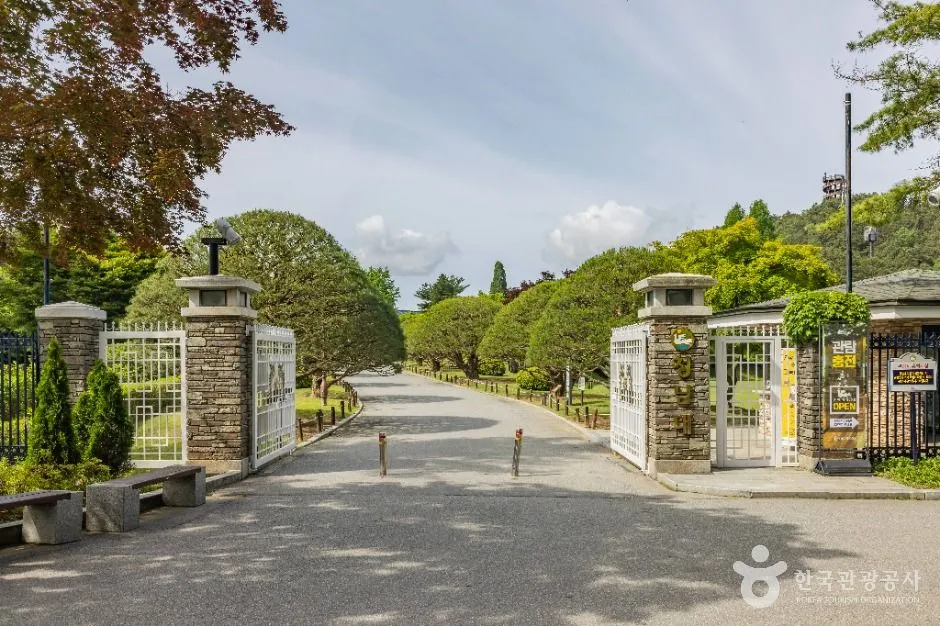
▲ 정문 방향으로 이어지는 넓고 곧은 진입로. 녹음이 짙은 시기에 촬영된 사진으로 보인다 ⓒ 한국관광공사
2. 운영시간·입장료·휴관일 — 공식 기준 한눈에
아래 표는 공식 관람안내·입장요금 안내 페이지 기준이다. 개인 성인 입장료는 6,000원이며, 일부 자료에 남아 있는 5,000원은 단체 요금(20명 이상)에 해당한다. 한국관광공사 관광정보(TourAPI)의 운영시간·휴관일 표기도 공식 안내와 같다.
| 항목 | 내용 |
|---|---|
| 주소 | 충북 청주시 상당구 문의면 청남대길 646 |
| 문의 | 043-257-5080 (문의매표소 043-220-6418) |
| 관람시간 | 09:00~18:00 (12~1월은 09:00~17:00) |
| 매표·입장 마감 | 09:00~16:30 (12~1월은 15:30) |
| 휴관일 | 매주 월요일(공휴일·대체공휴일이면 다음 첫 평일), 1월 1일, 설날·추석 당일 |
| 개인 입장료 | 성인(19~64세) 6,000원 · 청소년(13~18세) 4,000원 · 어린이(7~12세) 3,000원 |
| 단체(20명 이상) | 성인 5,000원 · 청소년 3,000원 · 어린이 2,000원 |
| 무료 대상 | 65세 이상, 군인(병 이하), 국가유공자, 중증장애인(보호자 1인 포함), 임산부(보호자 1인 포함), 7세 미만(보호자 1인 포함) 등 — 증빙 필요 |
| 할인 | 충청권(충북·충남·대전·세종) 주민 신분증 제시 시 1,000원 감면, 문의면 가맹점 당일 영수증 제시 시 최대 2,000원 감면(중복 불가) |
| 주차 | 무료 (공식 요금 안내) |
| 대여 | 휠체어·유모차·보행보조기 무료 대여(청남대기념관 맞은편 대여소, 신분증 필수, 재고 한정) |
| 반려견 | 목줄·배변봉투 필수, 입마개 지참·착용 권장 / 실외만 관람 가능, 실내 출입 불가 |
공식 요금 원문은 청남대 홈페이지에서 볼 수 있다. 입장요금 안내 바로가기
✅ 도착 시간 계산법
· 입장 마감은 폐장(18:00)이 아니라 16:30이다. 해가 짧아지는 가을에는 오후 2시 전후까지 도착해야 전망대·산책로를 여유 있게 볼 수 있다
· 공식 기준 월요일 휴관이다. 다만 2025년 가을축제 때는 공식 공고에 '축제기간 월요일 정상개관'이라 적혀 있었다. 2026년 축제 기간(10월 31일~11월 8일)의 월요일(11월 2일) 개관 여부는 아직 공지되지 않아 확인이 필요하다
3. 찾아가는 길·주차·순환버스 — 자가용 방문자 동선
공식 '찾아오시는 길'은 문의청남대IC 톨게이트에서 나와 문의·신탄진 방향으로 좌회전, 300m 직진 후 문의사거리에서 좌회전해 약 12km 직진하면 청남대라고 안내한다. 내비게이션 검색어는 '청남대관리사업소' 또는 '청남대 주차장'이다. 서울에서의 소요시간은 공식 자료에 없어, 서울~청주 승용차 이동이 1시간 30분대로 알려진 점과 문의 진입 구간(약 30~40분)을 더해 대략 2시간~2시간 30분으로 추정한다. 정체에 따라 달라지므로 출발 전 내비게이션으로 확인하자.
공식 요금 안내에는 주차가 모든 방문객에게 무료로 표기되어 있다. 과거 자료에서 보이는 '소형 1,000원' 같은 주차요금은 현재 공식 표기와 다르다.
2026년 가을축제 기간에는 공식 사이트 게시물이 '주말 순환버스 무료 운행'과 '토요일 야간개장 21시까지'를 안내한다. 승차 장소·시간표는 2026년 9월 29일 기준 공개되지 않았고(공식 게시물도 '순환버스 운행 관련 문의는 홈페이지를 확인해 달라'고만 안내), 축제 운영 대행사는 우선협상 단계(협상기간 9월 14~29일)다. 참고로 2025년 축제 공식 공고의 순환버스 운영은 다음과 같았다.
| 항목 | 내용 |
|---|---|
| 운행일 | 축제 기간 주말 6일 (10/25·26, 11/1·2·8·9) |
| 문의문화유산단지 출발 | 첫차 09:20 ~ 막차 16:00 |
| 청남대관리사업소 출발 | 첫차 10:00 ~ 막차 18:00 |
| 승하차장 | 문의문화유산단지(출발) - 문의체육공원 - 호반주차장 - 노현습지공원 - 청남대(도착) |
| 요금 | 무료 · 순환버스 이용 관람객은 청남대 입장료도 무료 |
2026년에도 같은 조건으로 운영될지는 확정되지 않았다. 공식 2025년 공고 원문은 아래에서 볼 수 있다. 2025 가을축제 공고 바로가기 찾아오시는 길 바로가기
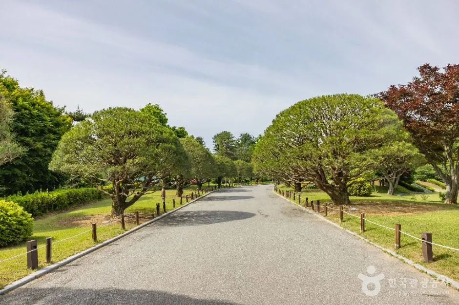
▲ 나무가 늘어선 경내 도로. 넓은 부지 덕분에 걷는 구간이 많아 편한 신발이 필수다 ⓒ 한국관광공사
4. 모노레일과 대청호 전망대 — 걷기 부담될 때
2026년 4월 개통한 모노레일은 제1전망대까지 약 330m 구간을 오간다. 공식 '모노레일 요금/시간표' 페이지 기준은 다음과 같다.
| 항목 | 내용 |
|---|---|
| 일반 요금 | 5,000원 (14~64세) |
| 소인/경로 | 3,000원 (3~13세, 65세 이상) |
| 할인·면제 | 장애인·충북도민은 증빙 시 할인(금액은 공식 표에 명시되지 않음), 36개월 미만 면제(증빙) |
| 운행 | 1일 20회, 20분 간격 · 상행 첫차 09:20 출발 · 마지막 상행 17:00 출발(하행 막차 17:30 출발) |
| 미운행 | 12:00~12:50 차량 점검 |
| 소요 | 상행 약 7분(예: 09:20 출발 → 09:27 도착) |
| 유의 | 접이식 유모차만 차량 내 반입 가능, 반려동물 동반 탑승 불가 |
공식 관람안내 페이지는 모노레일 운영시간을 '09:30~18:00'으로 적어, 시간표(첫차 09:20)와 표기가 다르다. 실제 첫차·막차는 시간표를 기준으로 삼되 현장 안내를 확인하자. 모노레일 요금·시간표 바로가기
청남대는 대청호에 면한 184만 4천㎡ 부지로, 공식 지도에는 1·2전망대, 출렁다리, 봉황의 숲, 하늘정원 등 30개 지점이 표시되어 있다. 산책로 곳곳에서 호수 조망이 열린다.
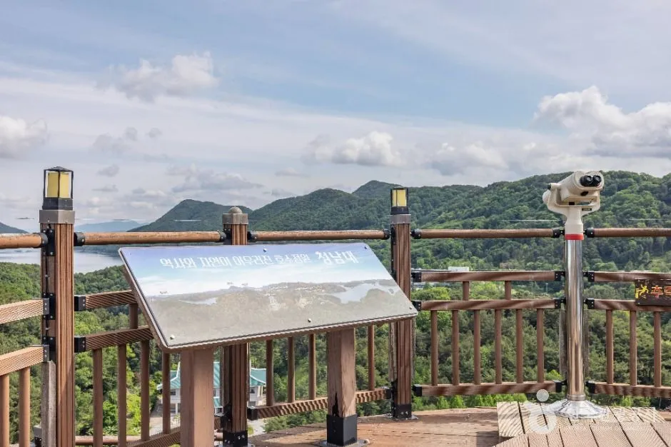
▲ 망원경과 안내판이 설치된 전망 데크. 멀리 산자락과 호수 풍경이 펼쳐진다 ⓒ 한국관광공사
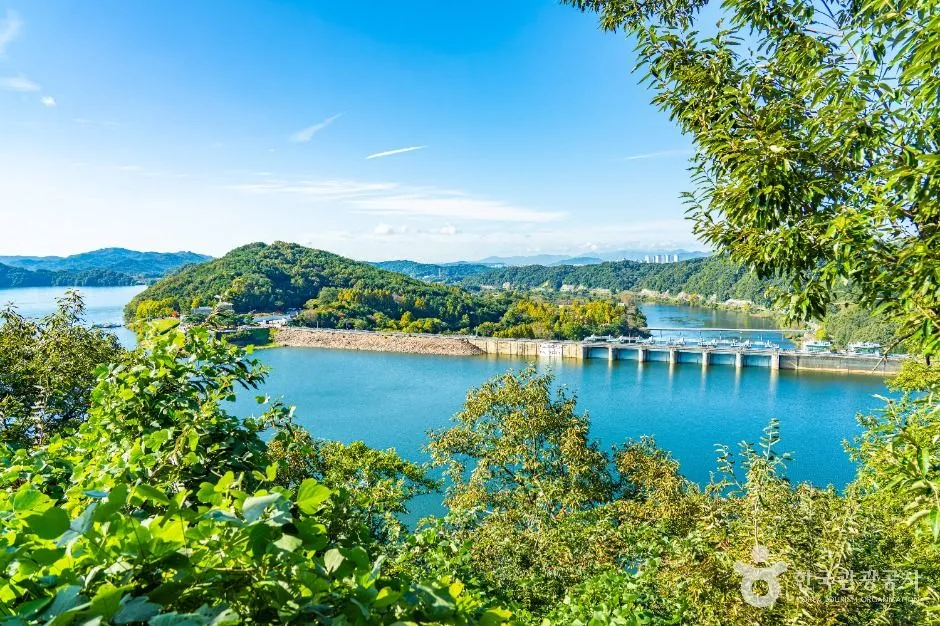
▲ 높은 곳에서 내려다본 대청호 풍경. 산줄기와 물길이 겹겹이 이어진다 ⓒ 한국관광공사
▲ 산으로 둘러싸인 넓은 호수 풍경. 물빛이 짙은 맑은 날에 촬영된 사진이다 ⓒ 한국관광공사
5. 대통령길 산책로 — 구간별 거리와 소요시간
청남대는 6개의 테마 산책로를 운영한다. 공식 지도 안내의 구간별 거리·소요시간은 아래와 같다. 오각정길은 일부 블로그가 2km로 적기도 하지만 공식 지도 기준은 1.5km(약 30분)이다.
| 구간 | 거리 | 소요시간 |
|---|---|---|
| 오각정길 | 1.5km | 약 30분 |
| 솔바람길 | 2km | 약 40분 |
| 민주화의 길 | 1km | 약 30분 |
| 통일의 길 | 2.5km | 약 60분 |
| 화합의 길 | 1km | 약 20분 |
| 호반길 | 3.1km | 약 90분 |
6개 구간을 모두 더하면 약 11.1km다. 후기 글에서 보이는 '종주 약 13km·5시간' 같은 수치는 공식 자료가 아니다. 처음 방문한다면 호반길이나 솔바람길 중 한두 구간에 전망대를 묶어 2~3시간 코스로 짜는 편이 현실적이다.
| 목적 | 조합 |
|---|---|
| 가볍게 1~2시간 | 오각정길(30분) + 화합의 길(20분) + 경내 전시 관람 |
| 호수 조망 중심 | 호반길(90분) + 모노레일로 제1전망대 |
| 숲길 위주 3시간 | 솔바람길(40분) + 통일의 길(60분) + 민주화의 길(30분) |
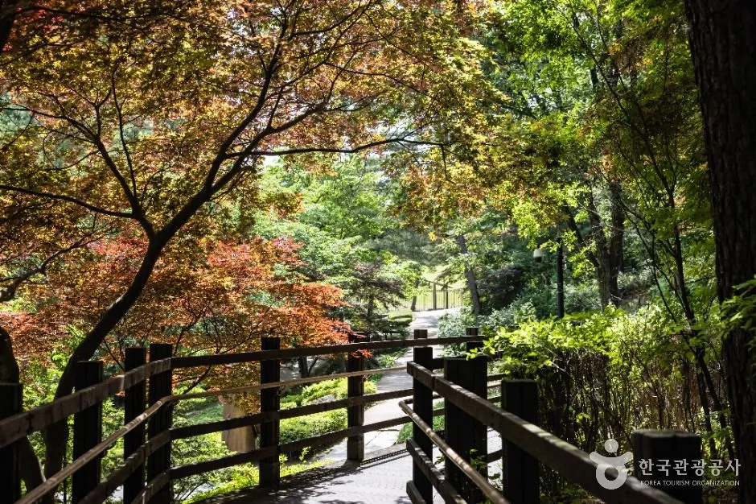
▲ 붉은 잎이 섞인 나무 데크 산책로. 산책로 곳곳에 이런 나무 데크 구간이 있다 ⓒ 한국관광공사
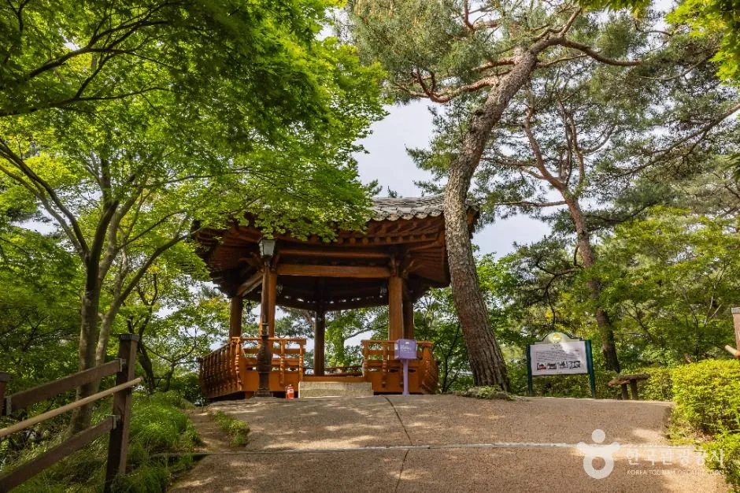
▲ 숲속에 자리한 정자. 산책로 곳곳에 쉬어 갈 수 있는 정자와 전망 시설이 있다 ⓒ 한국관광공사
공식 지도와 산책로 안내는 다음 페이지에서 볼 수 있다. 지도로 보는 청남대 바로가기
6. 날씨 궂은 날의 대안 — 실내 전시와 미술관
공식 '축제/행사/전시 안내' 게시판에는 2026년 9~10월 전시가 올라 있다. 산책 전후로 실내 전시를 끼우면 일정이 한결 여유롭다.
| 전시 | 기간 | 장소 |
|---|---|---|
| 초대전 「보자기로 수놓은 나비의 정원」 | 2026-09-22 ~ 10-25 | 호수영미술관 |
| 「빈티지 컬렉션」 (빈&골 블랙조) | 2026-09-08 ~ 10-11 | 대통령기념관 1층 특별전시실 |
| 엄미영 초대전 「당신은 어떤 기호입니까?」 | 2026-09-01 ~ 10-03 | 청남대기념관 기획전시실 1층 |
전시는 일정이 바뀔 수 있으니 방문 직전 공식 게시판을 확인하자. 축제·행사·전시 안내 바로가기
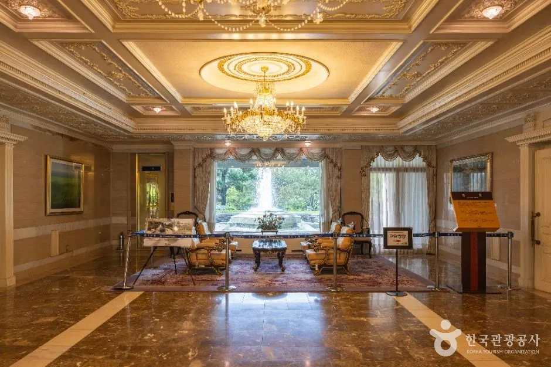
▲ 샹들리에가 걸린 실내 홀. 실내 전시·관람 공간은 비 오는 날에도 둘러볼 수 있다 ⓒ 한국관광공사
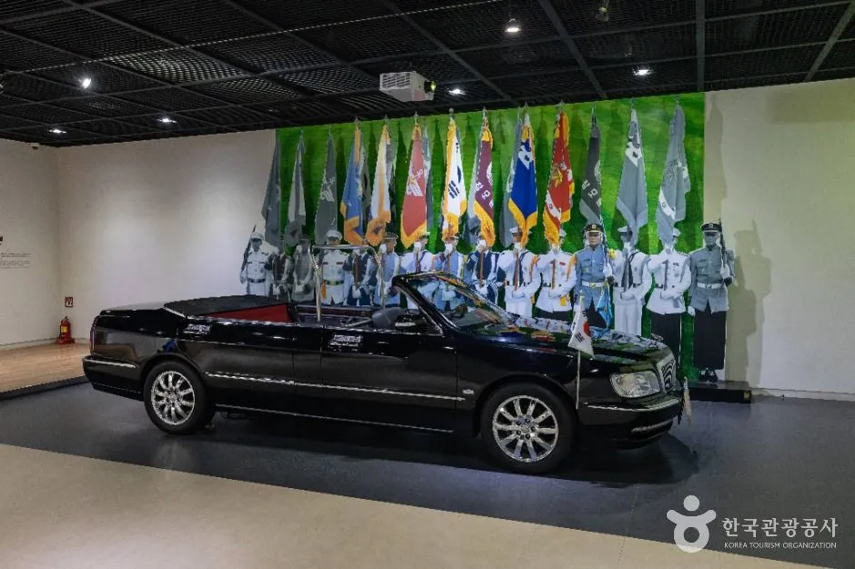
▲ 실내 전시 공간의 검은색 오픈카와 의장대 모형 ⓒ 한국관광공사
7. 가을 단풍과 2026 가을축제 — 무엇이 확정이고 무엇이 미정일까
제19회 2026 청남대 가을축제는 10월 31일(토)~11월 8일(일)로 공식 게시되었다. 확인되는 공식 안내는 주말 순환버스 무료 운행, 토요일 야간개장(21시까지), 문의지역 농특산물 홍보·판매장 운영 세 가지다. 축제 운영 대행사가 우선협상 단계라 세부 프로그램은 아직 공개되지 않았다.
| 구분 | 내용 |
|---|---|
| 기간·운영 | 2025-10-25 ~ 11-09 (16일), 월요일 정상개관, 토요일 21시까지 야간 운영 |
| 전시 | 국화분재(청남대기념관), 수목분재·바위솔·목석부작(헬기장) |
| 체험·판매 | 친환경·한방 체험, 6차산업, 목공예 체험, 푸드존, 문의면 농특산물 홍보판매장 등 |
| 공연 | 상설 12:00~14:30, 토요일 야간 18:00~18:30 (어울림마당) |
위 표는 2025년 공식 공고이며, 2026년 프로그램은 이와 다를 수 있다.
단풍 절정 시기는 공식 발표가 없다. 청남대 공식 SNS는 9월 28일 게시물에서 '단풍놀이·단풍명소'를 홍보했고, 충청권 단풍은 통상 10월 말~11월 초가 절정으로 알려져 있다. 공식 포토갤러리와 관광공사 사진에 단풍길·메타세쿼이아 데크가 담겨 있어 축제 기간(10월 31일~11월 8일)이 색이 좋은 시기와 겹칠 가능성이 높다고 보이지만, 기온에 따라 달라지므로 방문 직전 공식 SNS와 현장 상황으로 확인해야 한다.
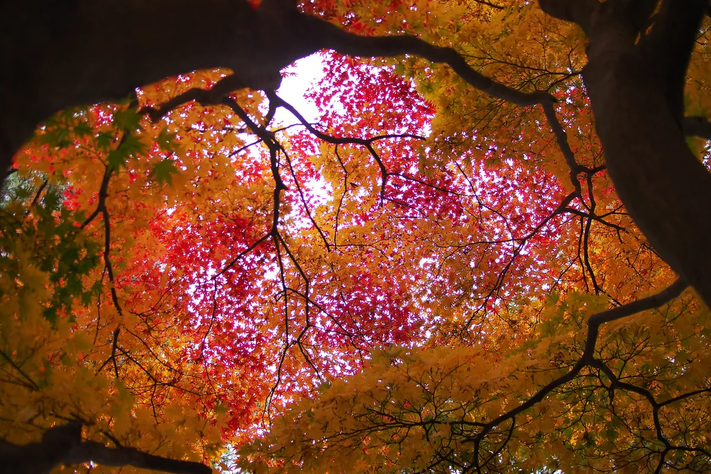
▲ 단풍잎 아래에서 올려다본 모습. 가을 사진(공식 포토갤러리) ⓒ 청남대관리사업소(충청북도)
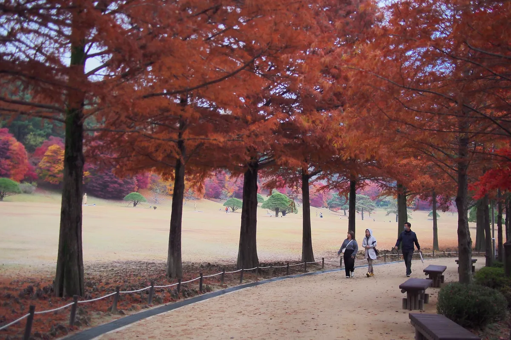
▲ 붉은 갈색으로 물든 가로수길. 가을 사진(공식 포토갤러리) ⓒ 청남대관리사업소(충청북도)
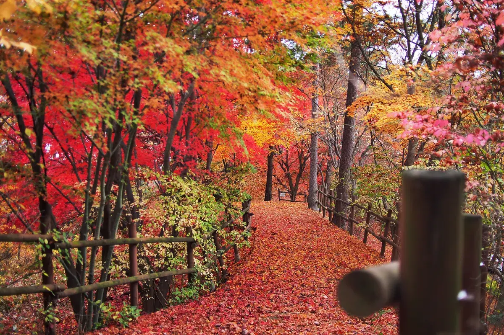
▲ 붉은 낙엽이 깔린 숲속 산책로. 늦가을 무렵 사진(공식 포토갤러리) ⓒ 청남대관리사업소(충청북도)
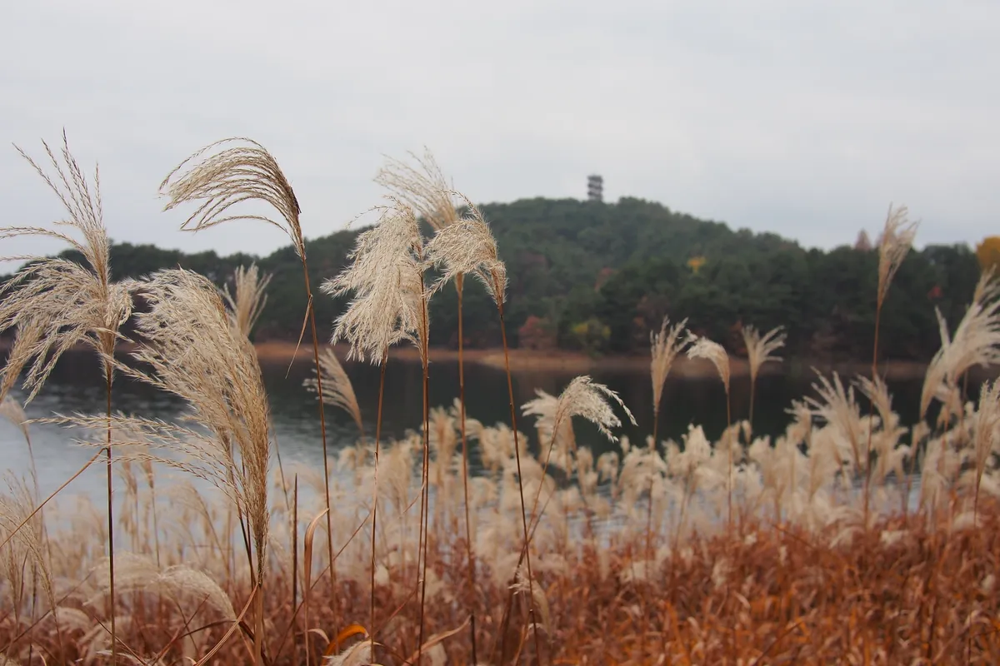
▲ 억새가 우거진 물가. 가을 사진(공식 포토갤러리) ⓒ 청남대관리사업소(충청북도)
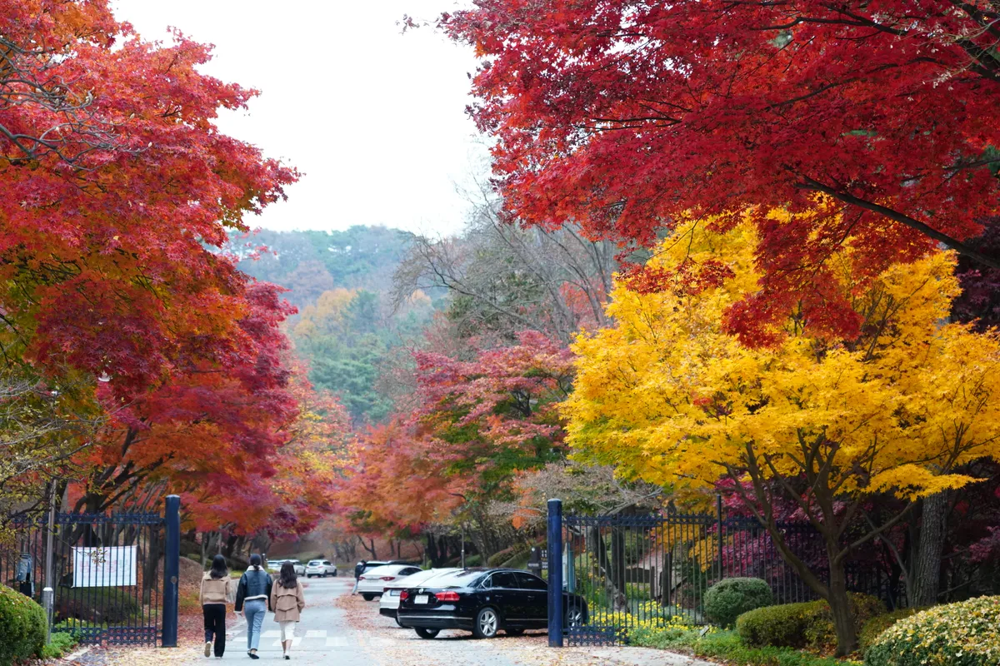
▲ 붉고 노란 단풍이 물든 입구 인근. 가을 사진(공식 포토갤러리) ⓒ 청남대관리사업소(충청북도)
공식 포토갤러리에는 계절별 사진이 올라 있다. 청남대 포토갤러리 바로가기 공식 사이트 안내는 홈페이지 메인에서 확인할 수 있다. 청남대 공식 홈페이지 바로가기
8. 가을 청남대 방문 전 점검 리스트
✅ 출발 전 확인할 것
· 매표: 공식 안내는 '주차 후 현장 매표'. 축제 주말은 043-257-5080으로 매표·주차 방식 재확인
· 입장 마감 16:30: 늦어도 오후 3시 이전 도착 권장, 모노레일 마지막 상행은 17:00 출발
· 축제 주말(10/31~11/1, 11/7~8): 순환버스 승차 장소·시간은 2026 공지 확인 (2025년은 문의문화유산단지 출발)
· 월요일(11/2): 축제 기간 휴관 여부 미공지 — 공식 확인 필요
· 신발·겉옷: 호반길·통일의 길은 걷는 거리가 길고 호수 바람이 차다
· 반려견: 실외만 가능, 실내 전시관 출입 불가
· 일정 여유: 경내가 넓어 실내 전시·산책·전망대를 모두 보려면 3시간 이상을 잡는 편이 좋다
9. 요약
청남대는 공식 기준 사전 예약이 필요 없고(주차 후 현장 매표), 매일 09:00~18:00(매표 마감 16:30)에 운영하며 월요일에 쉰다. 개인 성인 입장료는 6,000원, 주차는 무료다. 온라인 매표 종료(4월 1일) 소식은 후기에서만 확인되고 공식 공지는 찾지 못했다.
모노레일은 일반 5,000원·소인/경로 3,000원(20분 간격, 마지막 상행 17:00)이며, 6개 산책로는 구간별 20~90분(오각정길 1.5km)이다. 2026 가을축제는 10월 31일~11월 8일로 주말 무료 순환버스·토요 야간개장(21시)만 공식 안내되어 있고 세부 프로그램과 순환버스 시간표는 미공개다. 서울에서 대략 2~2.5시간(추정)이므로 오전 출발이 안전하다.